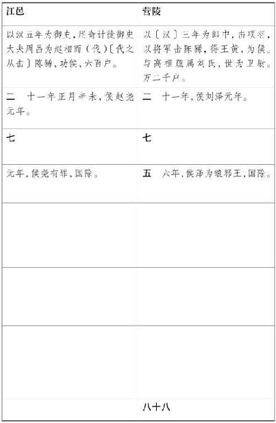

伍子胥 者，楚 人也，名员 。员 父曰伍奢 。员 兄曰伍尚 。其先曰伍举 ，以直谏事楚庄王 ，有显，故其后世有名于楚 。
楚平王 有太子名曰建 ，使伍奢 为太傅，费无忌 为少傅。无忌 不忠于太子建 。平王 使无忌 为太子取妇于秦 ，秦 女好，无忌 驰归报平王 曰：“秦 女绝美，王可自取，而更为太子取妇。”平王 遂自取秦 女而绝爱幸之，生子轸 。更为太子取妇。
无忌 既以秦 女自媚于平王 ，因去太子而事平王 。恐一旦平王 卒而太子立，杀己，乃因谗太子建 。建 母，蔡 女也，无宠于平王 。平王 稍益疏建 ，使建 守城父 ，备边兵。
顷之，无忌 又日夜言太子短于王曰：“太子以秦 女之故，不能无怨望，愿王少自备也。自太子居城父 ，将兵，外交诸侯，且欲人为乱矣。”平王 乃召其太傅伍奢 考问之。伍奢 知无忌 谗太子于平王 ，因曰：“王独奈何以谗贼小臣疏骨肉之亲乎？”无忌 曰：“王今不制，其事成矣。王且见禽。”于是平王 怒，囚伍奢 ，而使城父 司马奋扬 往杀太子。行未至，奋扬 使人先告太子：“太子急去，不然将诛。”太子建 亡奔宋 。
无忌
言于平王
曰：“伍奢
有二子，皆贤，不诛且为楚
忧。可以其父质而召之，不然且为楚
患。”王使使谓伍奢
曰：“能致汝二子则生，不能则死。”伍奢
曰：“尚
为人仁，呼必来。员
为人刚戾忍
，能成大事，彼见来之并禽，其势必不来。”王不听，使人召二子曰：“来，吾生汝父；不来，今杀奢
也。”伍尚
欲往，员
曰：“楚
之召我兄弟，非欲以生我父也，恐有脱者后生患，故以父为质，诈召二子。二子到，则父子俱死。何益父之死？往而令雠不得报耳。不如奔他国，借力以雪父之耻，俱灭，无为也。”伍尚
曰：“我知往终不能全父命。然恨父召我以求生而不往，后不能雪耻，终为天下笑耳。”谓员
：“可去矣！汝能报杀父之雠，我将归死。”尚
既就执，使者捕伍胥
。伍胥
贯弓执矢向使者，使者不敢进，伍胥
遂亡。闻太子建
之在宋
，往从之。奢
闻子胥
之亡也，曰：“楚国
君臣且苦兵矣。”伍尚
至楚
，楚
并杀奢
与尚
也。
伍胥 既至宋 ，宋 有华氏 之乱，乃与太子建 俱奔于郑 。郑 人甚善之。太子建 又适晋 ，晋顷公 曰：“太子既善郑 ，郑 信太子。太子能为我内应，而我攻其外，灭郑 必矣。灭郑 而封太子。”太子乃还郑 。事未会，会自私欲杀其从者，从者知其谋，乃告之于郑 。郑定公 与子产 诛杀太子建 。建 有子名胜 。伍胥 惧，乃与胜 俱奔吴 。到昭关 ，昭关 欲执之。伍胥 遂与胜 独身步走，几不得脱。追者在后。至江 ，江 上有一渔父乘船，知伍胥 之急，乃渡伍胥 。伍胥 既渡，解其剑曰：“此剑直百金，以与父。”父曰：“楚国 之法，得伍胥 者赐粟五万石，爵执珪，岂徒百金剑邪！”不受。伍胥 未至吴 而疾，止中道，乞食。至于吴 ，吴王僚 方用事，公子光 为将。伍胥 乃因公子光 以求见吴王 。
久之，楚平王
以其边邑锺离
与吴
边邑卑梁氏
俱蚕，两女子争桑相攻，乃大怒，至于两国举兵相伐。吴
使公子光
伐楚
，拔其锺离
、居巢
而归。伍子胥
说吴王僚
曰：“楚
可破也。愿复遣公子光
。”公子光
谓吴王
曰：“彼伍胥
父兄为戮于楚
，而劝王伐楚
者，欲以自报其雠耳。伐楚
未可破也。”伍胥
知公子光
有内志，欲杀王而自立，未可说以外事，乃进专诸
于公子光
，退而与太子建
之子胜
耕于野。
五年而楚平王 卒。初，平王 所夺太子建秦 女生子轸 ，及平王 卒，轸 竟立为后，是为昭王 。吴王僚 因楚 丧，使二公子将兵往袭楚 。楚 发兵绝吴 兵之后，不得归。吴国 内空，而公子光 乃令专诸 袭刺吴王僚 而自立，是为吴王阖庐 。阖庐 既立，得志，乃召伍员 以为行人，而与谋国事。
楚 诛其大臣郤宛 、伯州犁 ，伯州犁 之孙伯嚭 亡奔吴 ，吴 亦以嚭 为大夫。前王僚 所遣二公子将兵伐楚 者，道绝不得归。后闻阖庐 弑王僚 自立，遂以其兵降楚 ，楚 封之于舒 。阖庐 立三年，乃兴师与伍胥 、伯嚭 伐楚 ，拔舒 ，遂禽故吴 反二将军。因欲至郢 ，将军孙武 曰：“民劳，未可，且待之。”乃归。
四年，吴 伐楚 ，取六 与灊 。五年，伐越 ，败之。六年，楚昭王 使公子囊瓦 将兵伐吴 。吴 使伍员 迎击，大破楚 军于豫章 ，取楚 之居巢 。
九年，吴王阖庐 谓子胥 、孙武 曰：“始子言郢 未可入，今果何如？”二子对曰：“楚 将囊瓦 贪，而唐 、蔡 皆怨之。王必欲大伐之，必先得唐 、蔡 乃可。”阖庐 听之，悉兴师与唐 、蔡 伐楚 ，与楚 夹汉水 而阵。吴王 之弟夫概 将兵请从，王不听，遂以其属五千人击楚 将子常 。子常 败走，奔郑 。于是吴 乘胜 而前，五战，遂至郢 。己卯，楚昭王 出奔。庚辰，吴王 入郢 。
昭王 出亡，入云梦 ；盗击王，王走郧 。郧公 弟怀 曰：“平王 杀我父，我杀其子，不亦可乎！”郧公 恐其弟杀王，与王奔随 。吴 兵围随 ，谓随 人曰：“周 之子孙在汉川 者，楚 尽灭之。”随 人欲杀王，王子綦 匿王，己自为王以当之。随 人卜与王于吴 ，不吉，乃谢吴 不与王。
始伍员 与申包胥 为交，员 之亡也，谓包胥 曰：“我必覆楚 。”包胥 曰：“我必存之。”及吴 兵入郢 ，伍子胥 求昭王 。既不得，乃掘楚平王 墓，出其尸，鞭之三百，然后已。申包胥 亡于山中，使人谓子胥 曰：“子之报雠，其以甚乎！吾闻之，人众者胜天，天定亦能破人。今子故平王 之臣，亲北面而事之，今至于僇死人，此岂其无天道之极乎！”伍子胥 曰：“为我谢申包胥 曰，吾日莫途远，吾故倒行而逆施之。”于是申包胥 走秦 告急，求救于秦 。秦 不许。包胥 立于秦 廷，昼夜哭，七日七夜不绝其声。秦哀公 怜之，曰：“楚 虽无道，有臣若是，可无存乎！”乃遣车五百乘救楚 击吴 。六月，败吴 兵于稷 。会吴王 久留楚 求昭王 ，而阖庐 弟夫概 乃亡归，自立为王。阖庐 闻之，乃释楚 而归，击其弟夫概 。夫概 败走，遂奔楚 。楚昭王 见吴 有内乱，乃复入郢 。封夫概 于堂谿 ，为堂谿氏 。楚 复与吴 战，败吴 ，吴王 乃归。
后二岁，阖庐 使太子夫差 将兵伐楚 ，取番 。楚 惧吴 复大来，乃去郢 ，徙于鄀 。当是时，吴 以伍子胥 、孙武 之谋，西破强楚 ，北威齐晋 ，南服越 人。
其后四年，孔子 相鲁 。
后五年，伐越 。越王句践 迎击，败吴 于姑苏 ，伤阖庐 指，军却。阖庐 病创将死，谓太子夫差 曰：“尔忘句践 杀尔父乎？”夫差 对曰：“不敢忘。”是夕，阖庐 死。夫差 既立为王，以伯嚭 为太宰，习战射。二年后伐越 ，败越 于夫湫 。越王句践 乃以馀兵五千人栖于会稽 之上，使大夫种 厚币遗吴太宰嚭 以请和，求委国为臣妾。吴王 将许之。伍子胥 谏曰：“越王 为人能辛苦。今王不灭，后必悔之。”吴王 不听，用太宰嚭 计，与越 平。
其后五年，而吴王 闻齐景公 死而大臣争宠，新君弱，乃兴师北伐齐 。伍子胥 谏曰：“句践 食不重味，吊死问疾，且欲有所用之也。此人不死，必为吴 患。今吴 之有越 ，犹人之有腹心疾也。而王不先越 而乃务齐 ，不亦谬乎！”吴王 不听，伐齐 ，大败齐 师于艾陵 ，遂威邹鲁 之君以归。益疏子胥 之谋。
其后四年，吴王 将北伐齐 ，越王句践 用子贡 之谋，乃率其众以助吴 ，而重宝以献遗太宰嚭 。太宰嚭 既数受越 赂，其爱信越 殊甚，日夜为言于吴王 。吴王 信用嚭 之计。伍子胥 谏曰：“夫越 ，腹心之病，今信其浮辞诈伪而 贪齐 。破齐 ，譬犹石田，无所用之。且盘庚之诰 曰：‘有颠越不恭，劓殄灭之，俾无遗育，无使易种于兹邑。’此商 之所以兴。愿王释齐 而先越 ；若不然，后将悔之无及。”而吴王 不听，使子胥 于齐 。子胥 临行，谓其子曰：“吾数谏王，王不用，吾今见吴 之亡矣。汝与吴 俱亡，无益也。”乃属其子于齐鲍牧 ，而还报吴 。
吴太宰嚭
既与子胥
有隙，因谗曰：“子胥
为人刚暴，少恩，猜贼，其怨望恐为深祸也。前日王欲伐齐
，子胥
以为不可，王卒伐之而有大功。子胥
耻其计谋不用，乃反怨望。而今王又复伐齐
，子胥
专愎强谏，沮毁用事，徒幸吴
之败以自胜其计谋耳。今王自行，悉国中武力以伐齐
，而子胥
谏不用，因辍谢，详病不行。王不可不备，此起祸不难。且嚭
使人微伺之，其使于齐
也，乃属其子于齐
之鲍氏
。夫为人臣，内不得意，外倚诸侯，自以为先王之谋臣，今不见用，常鞅鞅怨望。愿王早图之。”吴王
曰：“微子之言，吾亦疑之。”乃使使赐伍子胥
属镂之剑，曰：“子以此死。”伍子胥
仰天叹曰：“嗟乎！谗臣嚭
为乱矣，王乃反诛我。我令若父霸。自若未立时，诸公子争立，我以死争之于先王，几不得立。若既得立，欲分吴国
予我，我顾不敢望也。然今若听谀臣言以杀长者。”乃告其舍人曰：“必树吾墓上以梓，令可以为器；而抉吾眼悬吴
东门之上，以观越
寇之入灭吴
也。”乃自刭死。吴王
闻之大怒，乃取子胥
尸盛以鸱夷革，浮之江
中。吴
人怜之，为立祠于江
上，因命曰胥山
。
吴王
既诛伍子胥
，遂伐齐
。齐鲍氏
杀其君悼公
而立阳生
。吴王
欲讨其贼，不胜而去。其后二年，吴王
召鲁卫
之君会之橐皋
。其明年，因北大会诸侯于黄池
，以令周室
。越王句践
袭杀吴
太子，破吴
兵。吴王
闻之，乃归，使使厚币与越
平。后九年，越王句践
遂灭吴
，杀王夫差
，而诛太宰嚭
，以不忠于其君，而外受重赂，与己比周也。
伍子胥 初所与俱亡故楚太子建 之子胜 者，在于吴 。吴王夫差 之时，楚惠王 欲召胜 归楚 。叶公 谏曰：“胜 好勇而阴求死士，殆有私乎！”惠王 不听。遂召胜 ，使居楚 之边邑鄢 ，号为白公 。白公 归楚 三年而吴 诛子胥 。
白公胜 既归楚 ，怨郑 之杀其父，乃阴养死士求报郑 。归楚 五年，请伐郑 ，楚令尹子西 许之。兵未发而晋 伐郑 ，郑 请救于楚 。楚 使子西 往救，与盟而还。白公胜 怒曰：“非郑 之仇，乃子西 也。”胜 自砺剑，人问曰：“何以为？”胜 曰：“欲以杀子西 。”子西 闻之，笑曰：“胜 如卵耳，何能为也。”
其后四岁，白公胜
与石乞
袭杀楚令尹子西
、司马子綦
于朝。石乞
曰：“不杀王，不可。”乃劫王如高府
。石乞
从者屈固
负楚惠王
亡走昭夫人
之宫。叶公
闻白公
为乱，率其国人攻白公
。白公
之徒败，亡走山中，自杀。而虏石乞
，而问白公
尸处，不言将亨。石乞
曰：“事成为卿，不成而亨，固其职也。”终不肯告其尸处。遂亨石乞
，而求惠王
，复立之。
太史公 曰：怨毒之于人甚矣哉！王者尚不能行之于臣下，况同列乎！向令伍子胥 从奢 俱死，何异蝼蚁。弃小义，雪大耻，名垂于后世。悲夫！方子胥 窘于江 上，道乞食，志岂尝须臾忘郢 邪？故隐忍就功名，非烈丈夫孰能致此哉？白公 如不自立为君者，其功谋亦不可胜道者哉！